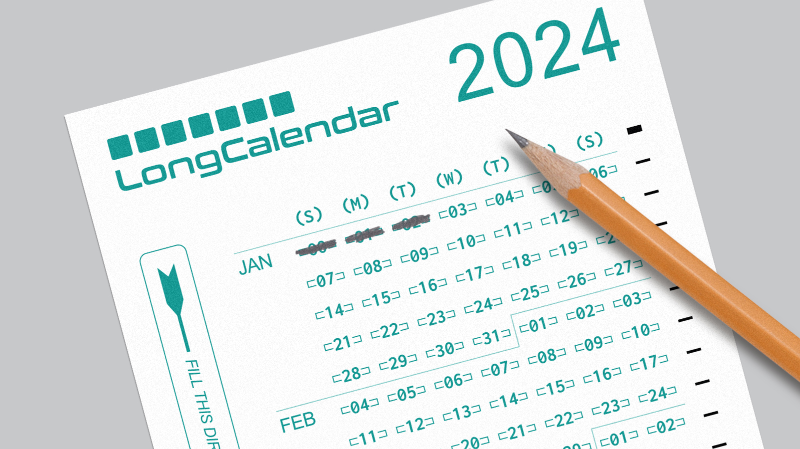

← Return to Homepage — Calendar

2024 Calendar — 4.25 × 14"
Another year, another calendar design. This one is based on the iconic Scantron standardized tests from my youth. Fill in each day or mark special occassions. Just please, only use a #2 pencil. Designed to be printed on US legal paper (8.5x14") — but it's a 2-for-1 deal. Just cut vertically down the middle. And clip the bottom-left corner for extra authenticity.

Thanks for looking and happy new year!
Print Your Own
Fonts Used
01. Conthrax (logo)
02. Inconsolata
03. Arial
Inspired By
Last Updated
2023.11.06